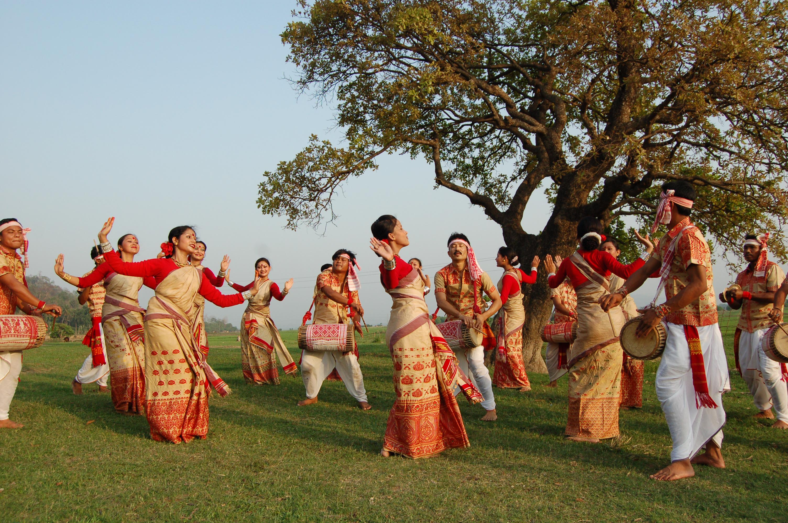

Culture Connection
Indian Culture: A Rich Tapestry of Traditions and Customs
India is a land of rich cultural heritage and diversity. From the ancient Indus Valley Civilization to the present day, India has been shaped by a complex and unique cultural fabric that has been woven over thousands of years.
The Indian culture is a melting pot of various traditions and customs that have been passed down from generation to generation. These traditions and customs are deeply rooted in the Hindu religion, which is the largest religion in India. Hinduism has greatly influenced the Indian way of life, including its art, music, architecture, and philosophy.


Architecture And Philosophy In India Art And Music In India
One of the most important aspects of Indian culture is the family structure. Family is highly valued in India and is seen as a source of strength and support. Joint families, where multiple generations live together, are still a common practice in India.
Another important aspect of Indian culture is the importance of food. In India, food is not just about sustenance, it is about socializing, sharing, and celebrating. Indian cuisine is renowned for its diverse and flavorful dishes that are made using a variety of spices and herbs. Some of the most famous Indian dishes include biryani, tandoori chicken, and butter chicken.


Assam Food In India Bengal Food In India
Arts and crafts also play a significant role in Indian culture. From the intricate carvings on temple walls to the vibrant colors of a Rajasthani textile, Indian art is known for its intricate designs and rich colors. Handicrafts, such as pottery, weaving, and wood carving, are also an important part of Indian culture and are widely recognized for their beauty and skillful craftsmanship.
karnataka Food In India kerala Food In India
Religion also plays a big role in Indian culture. India is home to a number of religions, including Hinduism, Islam, Christianity, Buddhism, Jainism, and Sikhism. Religious festivals and ceremonies are a regular occurrence in India, and they bring people together to celebrate and honor their beliefs. Some of the most famous religious festivals in India include Diwali, Holi, and Navaratri.In conclusion, the Indian culture is a rich tapestry of traditions and customs that have been woven together over thousands of years. From the family structure to the importance of food, arts and crafts, and religion, the Indian culture is unique, diverse, and deeply rooted in the Hindu religion. Whether you are a traveler visiting India or an Indian living abroad, the Indian culture is sure to leave a lasting impression.